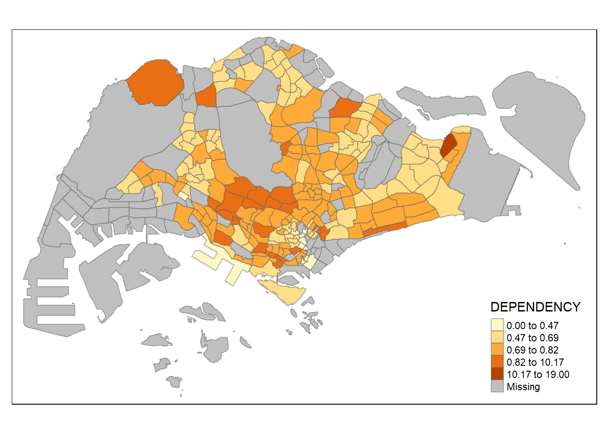
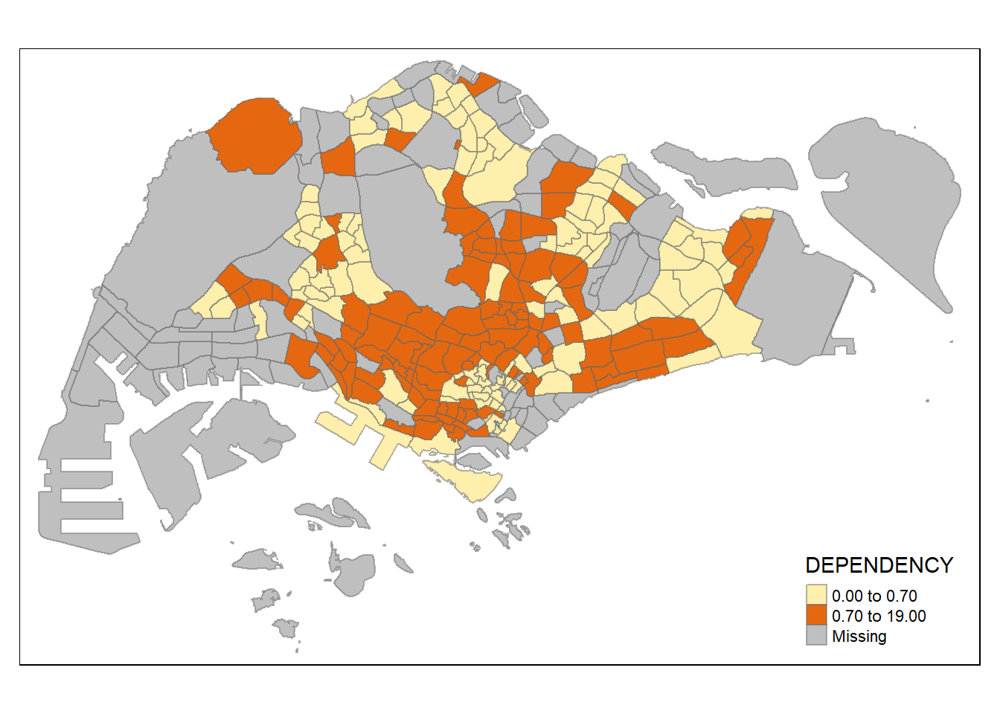
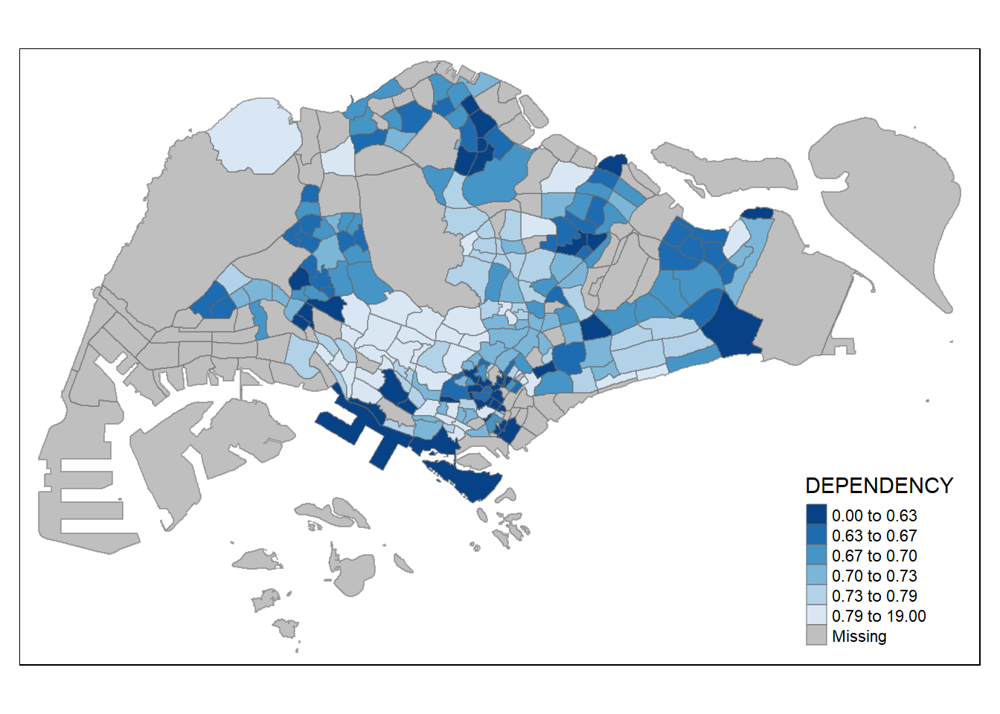
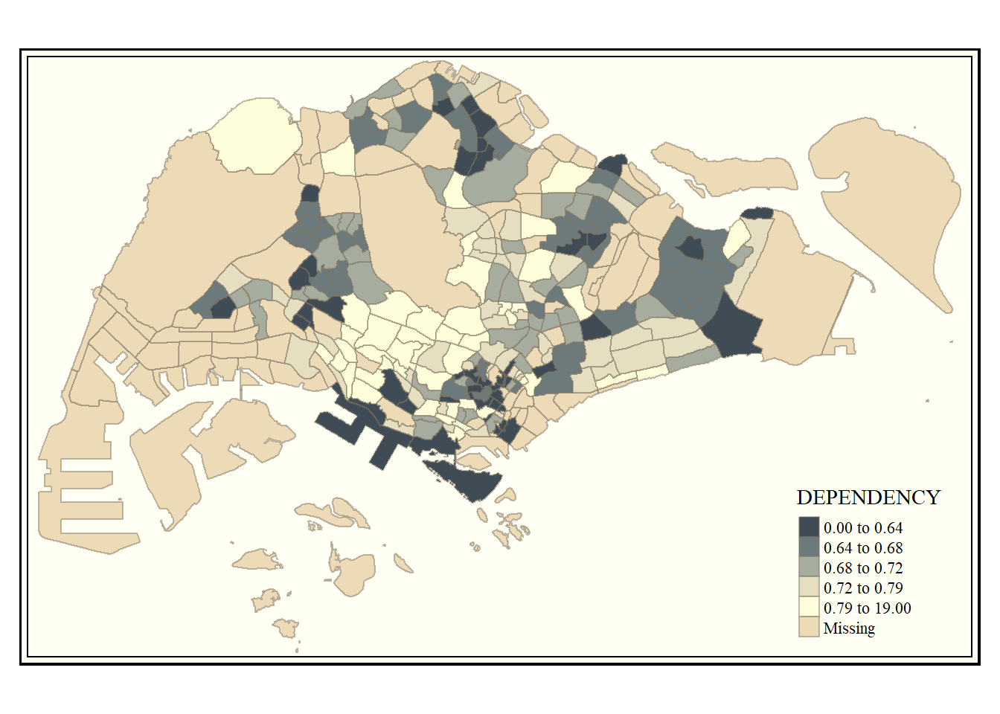
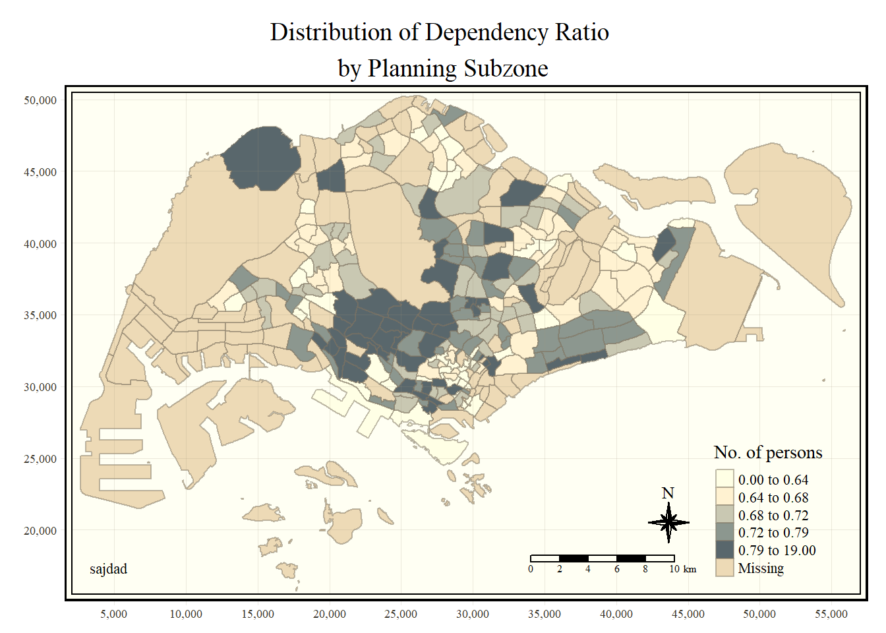
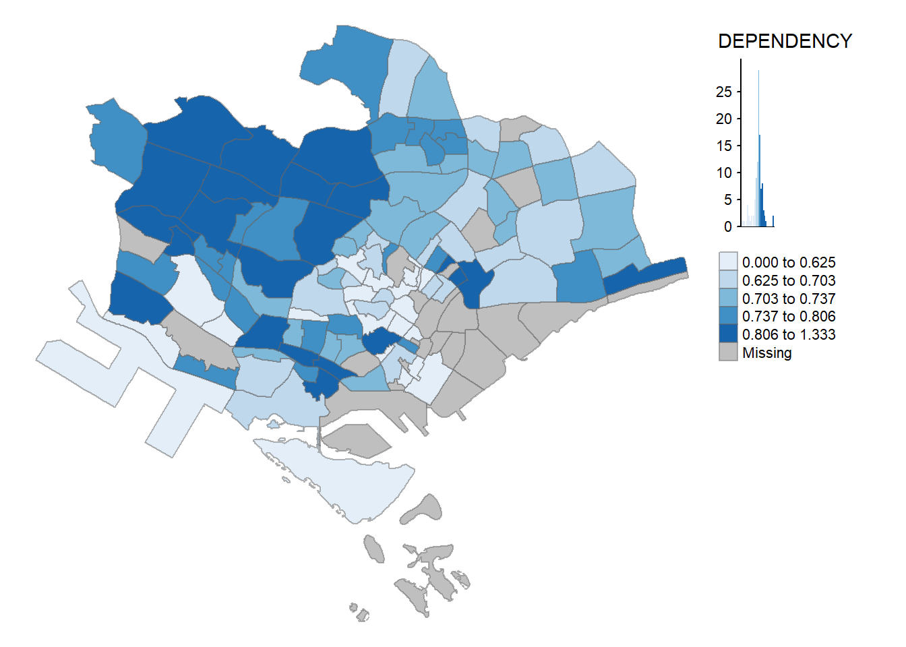

pacman::p_load(sf,tmap,tidyverse)Exercise 2
Thematic Mapping and GeoVisualisation with R
Overview
Thematic mapping involves the use of map symbols to visualise properties of geographic features that are not naturally visible, a few examples being population, temperature, and crime rate.
On the other hand, geovisualisation works by providing graphical ideation to render a place, phenomenon, or process visible, allowing us to utilise our vision to process information.
Install/Launch R Packages
This exercise uses the R packages tmap, sf and tidyverse.
Download and Import Data
Download the following:
Master Plan 2014 Subzone Boundary Data
Singapore Residents by Planning Are / Subzone, Age Group, Sex, and Dwelling
Using st_read(), import the following geospatial data into R:
mpsz <- st_read(dsn = "data/geospatial", layer = "MP14_SUBZONE_WEB_PL")Reading layer `MP14_SUBZONE_WEB_PL' from data source
`C:\Users\pwnyt\Documents\GitHub\415\HOE\ex2\data\geospatial'
using driver `ESRI Shapefile'
Simple feature collection with 323 features and 15 fields
Geometry type: MULTIPOLYGON
Dimension: XY
Bounding box: xmin: 2667.538 ymin: 15748.72 xmax: 56396.44 ymax: 50256.33
Projected CRS: SVY21Next, import the aspatial data and save it into an R dataframe:
popdata <- read_csv("data/aspatial/respopagesextod2011to2020.csv")Rows: 984656 Columns: 7
── Column specification ────────────────────────────────────────────────────────
Delimiter: ","
chr (5): PA, SZ, AG, Sex, TOD
dbl (2): Pop, Time
ℹ Use `spec()` to retrieve the full column specification for this data.
ℹ Specify the column types or set `show_col_types = FALSE` to quiet this message.Data Preparation
Before a thematic map can be made, a data table with 2020 values needs to prepared. The data table should include the following:
YOUNG: Age groups 0-4 until 20-24
ECONOMY ACTIVE: Age groups 25-29 until 60-64
AGED: Age group 65+
TOTAL: All age groups
DEPENDENCY: the ratio between the YOUNG and AGED ages groups against the ECONOMY ACTIVE age groups
Perform data wrangling and transformation using the code below:
popdata2020 <- popdata %>%
filter(Time == 2020) %>%
group_by(PA, SZ, AG) %>%
summarise(`POP` = sum(`Pop`)) %>%
ungroup() %>%
pivot_wider(names_from = AG, values_from = POP) %>%
mutate(`YOUNG` = rowSums(.[3:6]) + rowSums(.[14])) %>%
mutate(`ECONOMY ACTIVE` = rowSums(.[7:13])+rowSums(.[15])) %>%
mutate(`AGED` = rowSums(.[16:21])) %>%
mutate(`TOTAL` = rowSums(.[3:21])) %>%
mutate(`DEPENDENCY` = (`YOUNG` + `AGED`)/`ECONOMY ACTIVE`) %>%
select(`PA`, `SZ`, `YOUNG`, `ECONOMY ACTIVE`, `AGED`, `TOTAL`, `DEPENDENCY`)`summarise()` has grouped output by 'PA', 'SZ'. You can override using the
`.groups` argument.Before we can perform the georelational join, one extra step is needed to convert the values in PA and SZ into uppercase.
popdata2020 <- popdata2020 %>%
mutate(across(c(PA, SZ), toupper)) %>%
filter(`ECONOMY ACTIVE` > 0)Next, left_join() is used to join the geographical data and attribute table using planning and subzone name as the common identifiers.
mpsz_pop2020 <- left_join(mpsz, popdata2020, by = c("SUBZONE_N" = "SZ"))Save the joined data in a file:
write_rds(mpsz_pop2020, "data/mpszpop2020.rds")Choropleth Mapping Geospatial Data using tmap
Choropleth mapping involves the symbolisation of enumeration units, such as countries, provinces, states, counties, or census units, using area patterns or graduated colors. Two approaches can be used to prepare thematic maps using tmap:
Plotting qucikly using qtm()
Plotting highly customisable thematic maps by using tmap elements
The easiest way to draw a choropleth map using tmap is by using qtm(), which provides a concise default visualisation in many cases.
The code below draws a cartographic standard choropleth map:
tmap_mode() with “plot” option produces a static map, “view” produces an interactive map.
“fill” argument is used to map the attribute.
tmap_mode("plot")tmap mode set to plottingqtm(mpsz_pop2020, fill = "DEPENDENCY")
Whilst fast and simple to use, the disadvantage of qtm() is that it makes the aesthetics of individual layers harder to control. To draw a high quality cartographic choropleth map, use tmap’s drawing elements.
tm_shape(mpsz_pop2020)+
tm_fill("DEPENDENCY", style = "quantile", palette = "Blues", title = "Dependency Ratio") + tm_layout(main.title = "Distribution of Dependency Ratio by Planning Subzone", main.title.position = "center", main.title.size = 1.2, legend.height = 0.45, legend.width = 0.35, frame = TRUE) + tm_borders(alpha = 0.5) + tm_compass(type = "8star", size = 2) + tm_scale_bar() + tm_grid(alpha = 0.2) + tm_credits("Source: Planning Sub-zone boundary from Urban Redevelopment Authorithy (URA)\n and Population data from Department of Statistics DOS",position = c("left", "bottom"))Let’s break down this block of code into its subfunctions:
tm_shape() is used to define the input data, and tm_polygons is used to draw out the Planning Subzones:
tm_shape(mpsz_pop2020) + tm_polygons()
To draw a choropleth map showing the geographical distribution of a selected variable by planning subzone, we just need to assign the target variable to tm_polygons():
tm_shape(mpsz_pop2020) + tm_polygons("DEPENDENCY")
In actuality, tm_polygons() is a wrapper function of tm_fill() and tm_border(). tm_fill() shades the polygons according to the default colorscheme, while tm_borders() adds the borders of the shapefile onto the choropleth map.
The code below only uses tm_fill() to draw a choropleth map:
tm_shape(mpsz_pop2020) + tm_fill("DEPENDENCY")
To add the boundaries of the Planning Subzones, tm_borders() will be used:
tm_shape(mpsz_pop2020) + tm_fill("DEPENDENCY") + tm_borders(lwd = 0.1, alpha = 1)
The alpha argument is used to define transparency using a value between 0 (transparent) and 1 (opaque). By default, the alpha value of the col is used (usually 1).
Besides alpha, there are three other arguments for tm_borders():
col -> border color,
lwd -> borderline width, default 1,
lty -> borderline type, default “solid’ .
Most choropleth maps employ data classification methods. Classification takes large number of observations and groups them into data ranges.
tmap provides a total of ten data classification methods, shown below:
fixed
sd
equal
pretty
quantile (grouping by quantile)
kmeans (kmeans clustering)
hclust (hierarchical clustering)
bclust (bagged clustering)
fisher (fisher method)
jenks (jenks optimization)
To define a data classification method, the style argument tm_fill() or tm_polygon will be used.
tm_shape(mpsz_pop2020) + tm_fill("DEPENDENCY", n = 5, style = "quantile") + tm_borders(alpha = 0.5)
The code below uses the equal classification method.
tm_shape(mpsz_pop2020) + tm_fill("DEPENDENCY", n = 5, style = "equal") + tm_borders(alpha = 0.5)
The distribution of the data using the quantile data classification method is more evenly distributed than the equal data classification method.
using jenks
tm_shape(mpsz_pop2020) + tm_fill("DEPENDENCY", n = 5, style = "jenks") + tm_borders(alpha = 0.5)
using fisher
tm_shape(mpsz_pop2020) + tm_fill("DEPENDENCY", n = 5, style = "fisher") + tm_borders(alpha = 0.5)
using kmeans
tm_shape(mpsz_pop2020) + tm_fill("DEPENDENCY", n = 5, style = "kmeans") + tm_borders(alpha = 0.5)
using quantile, n = 2
tm_shape(mpsz_pop2020) + tm_fill("DEPENDENCY", n = 2, style = "quantile") + tm_borders(alpha = 0.5)
using quantile, n = 10
tm_shape(mpsz_pop2020) + tm_fill("DEPENDENCY", n = 10, style = "quantile") + tm_borders(alpha = 0.5)
using quantile, n = 20
tm_shape(mpsz_pop2020) + tm_fill("DEPENDENCY", n = 20, style = "quantile") + tm_borders(alpha = 0.5)
For all the inbuilt styles, the category breaks are computed internally. In order to override the default parameters, the breakpoints can be set explicitly using the breaks argument to tm_fill(). In tmap, the breaks include a minimum and maximum. As such, n+1 elements must be specified to create n categories.
summary(mpsz_pop2020$DEPENDENCY) Min. 1st Qu. Median Mean 3rd Qu. Max. NA's
0.0000 0.6519 0.7025 0.7742 0.7645 19.0000 92 Using the above results as reference, we set the breakpoints at .6, .7, .8, and .9. With the addition of the min and max breakpoints, the breaks vector is c(0, 0.6, 0.7, 0.8, 0.9, 1).
tm_shape(mpsz_pop2020) + tm_fill("DEPENDENCY", breaks = c(0, 0.60, 0.70, 0.80, 0.90, 1.00)) + tm_borders(alpha = 0.5)Warning: Values have found that are higher than the highest breaktmap supports color ramps either defined by the user, or from a prebuilt set from the RColorBrewer package.
Assigning the preferred color to the palette argument of tm_fill() as shown in the code chunk below.
tm_shape(mpsz_pop2020) + tm_fill("DEPENDENCY", n = 6, style = "quantile", palette = "Blues") + tm_borders(alpha = 0.5)
Reverse the color shading using “-”
tm_shape(mpsz_pop2020) + tm_fill("DEPENDENCY", n = 6, style = "quantile", palette = "-Blues") + tm_borders(alpha = 0.5)
Map layout refers to the combination of all map elements into a cohesive map. Map elements include the title, scale bar, compass, margins, and aspect ratios.
In tmap, several legend options are provided to change the placement, format, and appearance of the legend.
tm_shape(mpsz_pop2020)+tm_fill("DEPENDENCY", style = "jenks", palette = "Blues", title = "No. of persons") + tm_layout(main.title = "Distribution of Dependency Ratio \nby Planning Subzone", main.title.position = "center", main.title.size = 1, legend.height = 0.45, legend.width = 0.35, frame = TRUE) + tm_borders(alpha = 0.5)tmap allows a wide variety of layout settings to be changed, whcih can be called using tmap_style()
tm_shape(mpsz_pop2020) + tm_fill("DEPENDENCY", style = "quantile", palette = "-Blues") + tm_borders(alpha = 0.5) + tmap_style("classic")tmap style set to "classic"other available styles are: "white", "gray", "natural", "cobalt", "col_blind", "albatross", "beaver", "bw", "watercolor" 
tmap also provides arguments to draw map features such as compass, scale bar, and grid lines.
tm_shape(mpsz_pop2020)+tm_fill("DEPENDENCY", style = "quantile", palette = "Blues", title = "No. of persons") + tm_layout(main.title = "Distribution of Dependency Ratio \nby Planning Subzone", main.title.position = "center", main.title.size = 1.2, legend.height = 0.45, legend.width = 0.35, frame = TRUE) + tm_borders(alpha = 0.5) + tm_compass(type="8star", size = 2) + tm_scale_bar(width = 0.15) + tm_grid(lwd = 0.1, alpha = 0.2) + tm_credits("Source: Planning Sub-zone boundary from Urban Redevelopment Authority (URA)\n and Population data from Department of Statistics DOS", position = c("left", "bottom"))
Reset the default style using the code below:
tmap_style("white")tmap style set to "white"other available styles are: "gray", "natural", "cobalt", "col_blind", "albatross", "beaver", "bw", "classic", "watercolor" Facet maps are composed of multiple small maps arranged adjacently, and enable the visualisation of how spatial relationships change with respect to another variable, such as time.
tmap allows facet maps to be plotted in 3 ways:
by assigning multiple values to at least one of the aesthetic arguments
by defining a group-by variable in tm_facets(),
by creating multiple stand-alone maps using tmap_arrange()
The code below creates facet maps by defining ncols in tm_fill():
tm_shape(mpsz_pop2020) + tm_fill(c("YOUNG", "AGED"), style = "equal", palette = "Blues") + tm_layout(legend.position = c("right", "bottom")) + tm_borders(alpha = 0.5)
The code below creates facet maps by assigning multiple value to at least one of the aesthetic arguments:
tm_shape(mpsz_pop2020) + tm_polygons(c("DEPENDENCY", "AGED"), style = c("equal", "quantile"), palette = list("Blues", "Greens")) + tm_layout(legend.position = c("right", "bottom"))
The code below creates facet maps by using tm_facets():
tm_shape(mpsz_pop2020) + tm_fill("DEPENDENCY", style = "quantile", palette = "Blues", thres.poly = 0) + tm_facets(by="REGION_N", free.coords = TRUE, drop.units = TRUE) + tm_layout(legend.show = FALSE, title.position = c("center", "center"), title.size = 20) + tm_borders(alpha = 0.5)
The code below creates facet maps by using tm_arrange():
youngmap <- tm_shape(mpsz_pop2020) + tm_polygons ("YOUNG", style = "quantile", palette = "Blues")
agedmap <- tm_shape(mpsz_pop2020) + tm_polygons ("AGED", style = "quantile", palette = "Blues")
tmap_arrange(youngmap, agedmap, asp=1, ncol=2)
Instead of creating a facet map, the selection function can be used to map spatial objects meeting the selection criterion.
tm_shape(mpsz_pop2020[mpsz_pop2020$REGION_N=="CENTRAL REGION", ]) + tm_fill("DEPENDENCY", style = "quantile", palette = "Blues", legend.hist = TRUE, legend.is.portrait = TRUE, legend.hist.z = 0.1) + tm_layout(legend.outside = FALSE, legend.height = 0.45, legend.width = 5.0, legend.position = c("right", "bottom"), frame = FALSE) + tm_borders(alpha = 0.5)